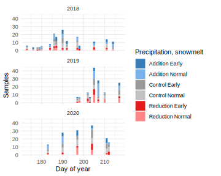
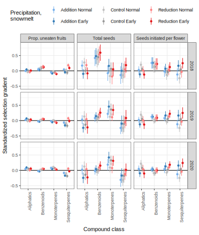
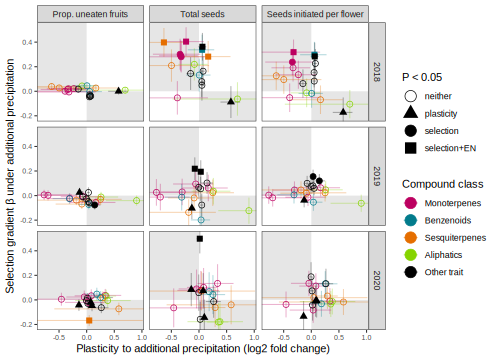
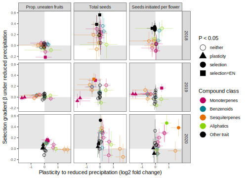
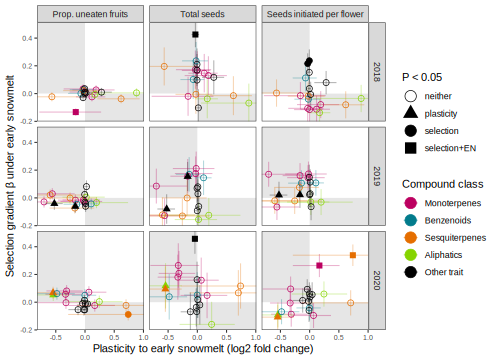
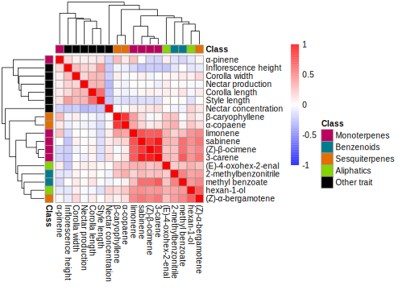
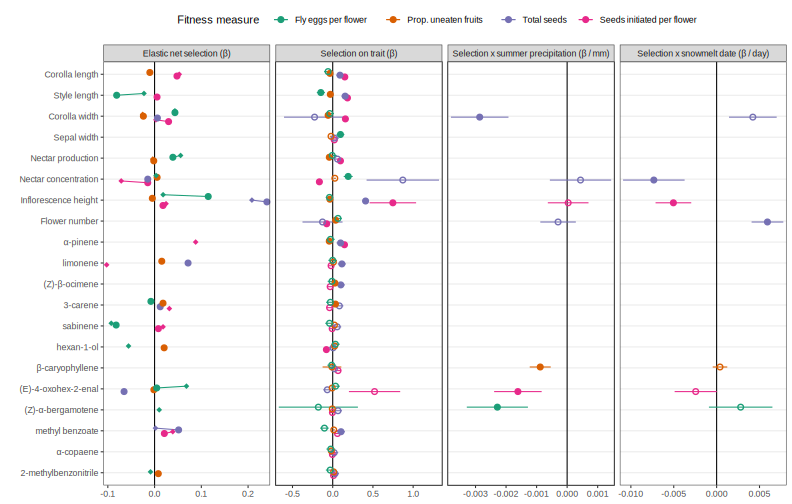
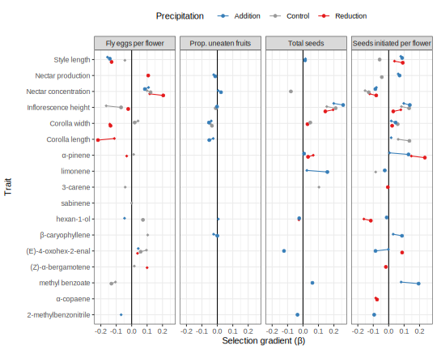
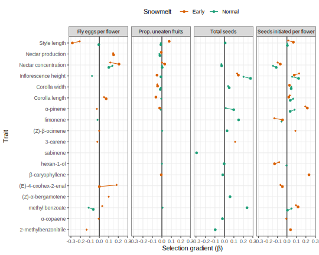

Process GCMS data
Filtering with bouquet
# load short names and standard regessions
ipochems <- read_csv("data/volatiles/Ipo volatile compounds - chemsf_ipo.csv") %>%
select(name, shortname, standard, verdict) %>% filter(verdict != "") %>%
mutate(standard = fct_recode(standard, "Methyl_salicylate"="Benzaldehyde"), # benzaldehyde regressions not reliable
class = fct_recode(standard, Aliphatics="Hexenol", Benzenoids="Methyl_salicylate", Benzenoids="Indole",
Sesquiterpenes="Caryophyllene", Monoterpenes="alpha_Pinene", Monoterpenes="Linalool")) %>%
left_join(read_csv("data/volatiles/regressions_181921_filtered_slopes.csv") %>%
pivot_wider(id_cols=standard, names_from="year", names_prefix="area_per_ng", values_from=area_per_ng))
class_pal <- set_names(c("#BC0060","#027B8C","#E56E00","#86D400"), levels(ipochems$class))
#shorten chemical names and merge compounds with multiple names
shortnames <- ipochems %>% select(name, shortname) %>% filter(shortname!="") %>% deframe()
greekify <- function(names) {
names %>%
str_replace("^a-","\U03B1-") %>% str_replace("-a-","-\U03B1-") %>%
str_replace("^b-","\U03B2-") %>% str_replace("-b-","-\U03B2-") %>%
str_replace("^g-","\U03B3-") %>% str_replace("-g-","-\U03B3-")
}
metadata <- maxfmeta %>%
mutate(sampledate = as.Date(sampledate), year = year(sampledate)) %>%
filter(year != 2021) %>% mutate(year=factor(year)) %>% #drop samples collected in 2021
as.data.frame() %>% #tibbles break bouquet's add_count_freqs
select(-sample) %>% #name conflict with bouquet
load_metadata(date="Date", sample="FileName", type="type")#group="year"
load("data/volatiles/maxfield210827.Rdata") #load long maxf.data
longdata <- maxf.data %>%
filter(batch != "heather_maxfield190813_new.txt", #duplicates - subset of heather_maxfield190813_new001.txt
Filename %in% metadata$sample, #match list in metadata
Name != "") %>% #drop unidentified peaks
mutate(Name = droplevels(recode(Name, !!!shortnames))) %>%
load_longdata(sample="Filename", RT="Ret.Time", name="Name", area="Area", match = "SI", maxmatch=100)
remove(maxf.data)
vol.all <- make_sampletable(longdata, metadata)
chems <- make_chemtable(longdata, metadata)
chemsf <- chems %>%
filter_RT(2, 17) %>%
filter_match(0.8) %>%
filter_freq(0.1) %>%
filter_contaminant(cont.list = c("Butanenitrile, 2-methyl-","2-Oxepanone, 7-methyl-", #RT order
"Ethylbenzene", "Hexyl chloroformate", "L-Lactic acid",
"1,5-Dimethyl-6-oxa-bicyclo[3.1.0]hexane","Cyclopentanone, 2-ethyl-",
"trisiloxane, 1,1,1,5,5,5-hexamethyl-3-[(trimethylsilyl)oxy]-",
"Cyclobutane, 1,2-bis(1-methylethenyl)-, trans-",
"N-.alpha.,N-.omega.-Di-cbz-L-arginine", "3-Ethyl-3-methylheptane",
"Trichloroacetic acid, 6-ethyl-3-octyl ester", "11-Methyldodecanol",
"8-Hexadecenal, 14-methyl-, (Z)-",
"Tritetracontane","Carbonic acid, decyl undecyl ester",
"Eicosane, 2,4-dimethyl-", "1-Decanol, 2-octyl-",
"linalyl acetate", #kovats doesn't match
"[(Z)-hex-3-enyl] 2-methylpropanoate", #merge into [(E/Z)-hex-3-enyl] butanoate
"[(E)-hex-4-enyl] butanoate", #merge into [(E/Z)-hex-3-enyl] butanoate
"[(Z)-hex-3-enyl] 2-methylbutanoate", #passed filters, only in 50 samples after quant
"2-butyloctan-1-ol",#absent in 2019
"(2E)-2,7-dimethylocta-2,6-dien-1-ol" #a quant integration that coelutes with b-myrcene
)) %>%
filter_area(min_maximum = 1e5) %>% #not used for final filtering
filter_ambient_ratio(vol.all, metadata, ratio = 4) %>%
combine_filters()
# removed (2E)-2,7-dimethylocta-2,6-dien-1-ol - quant integration that coelutes with b-myrcene
add_quant2 <- c("(4E,6Z)-alloocimene", "methyl benzoate", "2-methylbenzonitrile", "(Z)-b-ocimene", "(Z)-a-bergamotene", "g-terpinene", "(E)-b-bergamotene", "a-humulene", "pseudoionone")
chemsf$filter_final <- with(chemsf, filter_RT=="OK" & filter_match=="OK" &
filter_freq.floral=="OK" & filter_contaminant=="OK" |
name %in% c("[(E)-hex-3-enyl] butanoate", add_quant2)) #include as counterpart to Z isomer
#now run t-tests after rarity filtering
#don't filter by ambient ratio first, see paper on problems: https://doi.org/10.1186/1471-2105-11-450
chemsf <- bind_rows(chemsf %>% filter(filter_final) %>%
filter_ambient_ttest(prune_sampletable(vol.all, chemsf, metadata),
metadata, alpha = 0.05, adjust = "fdr"), #not used for final filtering
chemsf %>% filter(!filter_final)) %>%
mutate(filter_ambient_ttest=fct_na_value_to_level(filter_ambient_ttest, "notchecked"),
filter_final = filter_final & filter_ambient_ratio =="OK") %>%
arrange(match(name, colnames(vol.all)))
#vols <- maxf[volsmeta$index,]
vols <- vol.all[volsmeta$FileName,]
vols.cut <- vols[,colSums(vols)>3e8]
rownames(vols.cut) <- volsmeta$index
vol <- vols[volsmeta$FileName, chemsf$name[chemsf$filter_final]]#don't cut ambients yet
rownames(vol) <- volsmeta$index
# Shimadzu Quantitative Table ---------------------------------------------
# source("read_shimadzu.R")
# quantpath <- "~/MyDocs/MEGA/UCI/Schiedea/Analysis/scent/rmbl/RMBL Batches/quant_round4/"
# bfiles <- list.files(quantpath)
# quant.full <- map_dfr(set_names(paste0(quantpath, bfiles), bfiles), read.shimadzu.quant, .id="batch") %>%
# mutate(Name = trimws(Name), Area=replace_na(Area, 0)) %>%
# distinct(Filename, Name, .keep_all=T)
#
# quant.full %>% drop_na(Ret.Time) %>% mutate(Name = fct_reorder(Name, Ret.Time)) %>%
# ggplot(aes(x=Ret.Time, y=Name, color=batch)) + geom_jitter(width=0, size=0.2)
# quant.full %>% drop_na(Ret.Time) %>% group_by(Name) %>% mutate(RT.median = median(Ret.Time)) %>%
# ggplot(aes(x=Ret.Time-RT.median, y=Name, color=batch)) + geom_jitter(width=0, size=0.5)
#
# quant <- quant.full %>% select(batch, Dirname, Filename, Name, Area) %>%
# mutate(Dirname = fct_relabel(Dirname, str_remove, "C:/GCMSsolution/Data/Project1_190815/")) %>%
# filter(!Name %in% c("1,6,10-Dodecatrien-3-ol, 3,7,11-trimethyl-",
# "4,7-Methano-1H-indene, 2,4,5,6,7,7a-hexahydro-",
# "Tricyclo[3.1.0.0(2,4)]hexane, 3,6-diethyl-3,6-dimethyl-, trans-")) %>%
# mutate(Name = recode(Name, !!!shortnames)) %>%
# pivot_wider(names_from = "Name", values_from="Area") %>% as.data.frame()
#
# rownames(quant) <- quant$Filename
# quant[,c("batch","Dirname","Filename")] <- NULL
# quant.all <- quant[rownames(vols),]
# write_tsv(quant.all %>% rownames_to_column("Filename"), "data/volatiles/quant_all.tsv")
quant.all <- read_tsv("data/volatiles/quant_all.tsv") %>% column_to_rownames("Filename")
quant.slopes <- set_names(rep(0,ncol(quant.all)), colnames(quant.all))
for(compvol in colnames(quant.all)) {
nozeros <- bind_cols(select(vols,qual=compvol), select(quant.all,quant=compvol)) %>%
filter(!(qual==0 | quant == 0))
quant.slopes[compvol] = coef(lm(quant ~ 0 + qual, data=nozeros))["qual"]
}
write_tsv(enframe(quant.slopes) %>% left_join(enframe(shortnames, name="Name", value="name")),
"data/volatiles/quant_slopes.tsv")
quant.scaled <- sweep(quant.all, 2, quant.slopes, FUN = '/')
quant.scaled.vol <- quant.scaled[volsmeta$FileName,
colnames(quant.scaled) %in%
intersect(colnames(quant.all), colnames(vol))]
#swap in scaled quant integrations
vol[,colnames(quant.scaled.vol)] <- quant.scaled.vol
ipogood <- colnames(vol)
vols.good <- vol %>%
sweep(1, as.numeric(volsmeta$total_time, units="hours"), FUN = '/') #divide by equilibration + pumping time
ipochemsf <- ipochems[match(colnames(vols.good), ipochems$shortname),]
for(yr in unique(volsmeta$sequence.year)) {
thisyr <- volsmeta$sequence.year==yr
vols.good[thisyr,] <- sweep(vols.good[thisyr,], 2, pull(ipochemsf, paste0("area_per_ng","2019")), FUN = '/')# convert areas to nanograms
}
ipochemsf <- ipochemsf %>%
left_join(tibble(shortname = colnames(vols.good), # the following values are new, computed on the filtered dataset
freq.floral = map_dbl(as.data.frame(vols.good>0), mean),
mean.floral = map_dbl(vols.good, mean),
max.floral = map_dbl(vols.good, max))) %>%
select(-name) %>% rename(name=shortname) %>%
mutate(class=droplevels(class))#no Benzenoids
rownames(ipochemsf) <- ipochemsf$name
k <- 2 #split into this many k-means cluster per year
volsmeta$cluster <- 0
for(yr in unique(year(volsmeta$sequence.start))) {
thisyr <- volsmeta$sequence.year==yr
chems.include <- setdiff(colnames(vols.cut), ipogood) #drop alpha-pinene so this is all nonfloral
set.seed(1)
volsmeta$cluster[thisyr] <- kmeans(decostand(vols.cut[thisyr,chems.include], method="log"), k, nstart=3)$cluster
}
volsmeta <- volsmeta %>%
mutate(year.cluster = paste0(year, if_else(sequence.year == 2018, "", paste0(".",cluster))),
total = rowSums(vols.good),
sampledate = coalesce(sampledate, sampledate.file))#get sampling date from filename when no metadata
#Cuts 2 samples with extemely low emissions that fly off of nmds blob
keep.samples <- rowSums(vols.good)>3
volsmeta <- volsmeta[keep.samples,]
vols <- vols[keep.samples,]
vols.cut <- vols.cut[keep.samples,]
vols.good <- vols.good[keep.samples,]
Average by plant
volsmeta %>% count(year, plantid, name="n_samples") %>% count(n_samples) %>% kable(caption="number of samples per plant")
number of samples per plant
| 1 |
313 |
| 2 |
44 |
| 3 |
14 |
| 4 |
2 |
| 5 |
1 |
volsmeta.avg <- volsmeta %>%
group_by(across(all_of(c("type", "plantid", colnames(treatments))))) %>%
summarize(across(all_of(c("VWC", "total")), ~mean(.x, na.rm=T)),
index=index[1], .groups="drop")
vols.good.avg <- vols.good %>% bind_cols(volsmeta) %>%
group_by(across(all_of(c("plantid", colnames(treatments))))) %>%
summarize(across(all_of(colnames(vols.good)), ~mean(.x, na.rm=T)), .groups="drop") %>%
select(-any_of(colnames(volsmeta)))
rownames(volsmeta.avg) <- rownames(vols.good.avg) <- volsmeta.avg$index
minsamples <- nrow(vols.good) * 0.75 #top 12 most common volatiles, in 75% of samples
ipogood.top <- vols.good[colSums(decostand(vols.good,"pa")) > minsamples] %>%
colSums() %>% sort(decreasing=T) %>% names()
vols.good.top <- vols.good.avg[,ipogood.top]
volsmeta.good.top <- bind_cols(volsmeta.avg, vols.good.top) %>%
pivot_longer(-all_of(colnames(volsmeta.avg))) %>%
mutate(name = fct_relevel(name, ipogood.top))
mnps.plantyr.traits <- mnps.plantyr %>%
select(year, plotid, plantid, all_of(traits), eggs_per_flower) %>%
mutate(prop_uninfested = 1 - prop_infested) %>%
mutate(plantid = str_remove(plantid, "_[12][890]")) %>% #disambiguations on the plantid already handled by year column, except...
group_by(year, plotid, plantid) %>% #...two plants need to be combined in 2019
summarize(across(everything(), ~.x[!is.na(.x)][1]), .groups = "drop")
traits.good.top <- volsmeta.good.top %>%
left_join(mnps.plantyr.traits) %>%
mutate(name = fct_relevel(name, ipogood.top))
vols.class <- vols.good.avg %>% t() %>% as.data.frame() %>% rownames_to_column("name") %>%
left_join(select(ipochemsf, name=name, class)) %>%
group_by(class) %>% summarize(across(-name, sum)) %>% column_to_rownames("class") %>% t() %>% as.data.frame()
volsmeta.class <- bind_cols(volsmeta.avg, vols.class) %>%
pivot_longer(-all_of(colnames(volsmeta.avg)))
traits.class <- volsmeta.class %>% left_join(mnps.plantyr.traits)
volsmeta.traits <- volsmeta.avg %>% left_join(mnps.plantyr.traits) #wide format
vols.traits <- bind_cols(volsmeta.avg, vols.good.avg) %>% left_join(mnps.plantyr.traits)
Compound amounts
quant.RT <- read_tsv("data/volatiles/quant_RT.tsv")
load("data/volatiles/get_kovats.rda") # from RMBL-GCMS
quant.RI.2018 <- quant.RT %>% filter(year==2018) %>% mutate(RI = get_kovats(RT.median, "2018-09-03")) %>%
mutate(name = shortnames[Name])
vols.good.avg %>% #average by plant first
pivot_longer(everything()) %>% group_by(name) %>% summarize(mean_emissions = mean(value), sd_emissions=sd(value)) %>%
left_join(ipochemsf) %>% arrange(class, desc(mean_emissions)) %>%
left_join(quant.RI.2018) %>%
mutate(meansd = paste(sprintf(mean_emissions, fmt = '%#.1f'), "\U00B1", sprintf(sd_emissions, fmt = '%#.1f')),
name=greekify(name), RI= round(RI)) %>%
select(class, RI, name, meansd) %>% kable(caption = "Mean emission rates of each volatile")
Mean emission rates of each volatile
| Monoterpenes |
933 |
α-pinene |
42.2 ± 71.3 |
| Monoterpenes |
1029 |
limonene |
16.7 ± 21.0 |
| Monoterpenes |
1035 |
(Z)-β-ocimene |
15.6 ± 23.8 |
| Monoterpenes |
1010 |
3-carene |
10.1 ± 13.5 |
| Monoterpenes |
1047 |
(E)-β-ocimene |
6.3 ± 12.1 |
| Monoterpenes |
973 |
sabinene |
5.9 ± 7.8 |
| Monoterpenes |
988 |
β-myrcene |
4.8 ± 10.2 |
| Monoterpenes |
1217 |
verbenone |
3.2 ± 5.8 |
| Monoterpenes |
1195 |
α-terpineol |
3.0 ± 4.6 |
| Monoterpenes |
1056 |
γ-terpinene |
0.9 ± 1.5 |
| Monoterpenes |
1115 |
(3E)-4,8-dimethylnona-1,3,7-triene |
0.6 ± 1.3 |
| Monoterpenes |
1128 |
(4E,6Z)-alloocimene |
0.2 ± 0.3 |
| Benzenoids |
1096 |
methyl benzoate |
0.6 ± 0.6 |
| Benzenoids |
1141 |
2-methylbenzonitrile |
0.3 ± 0.2 |
| Sesquiterpenes |
1435 |
β-caryophyllene |
4.1 ± 10.3 |
| Sesquiterpenes |
1411 |
petasitene |
1.8 ± 4.7 |
| Sesquiterpenes |
1605 |
β-caryophyllene oxide |
1.0 ± 3.7 |
| Sesquiterpenes |
1454 |
(E)-β-bergamotene |
1.0 ± 2.0 |
| Sesquiterpenes |
1424 |
(Z)-α-bergamotene |
0.7 ± 0.9 |
| Sesquiterpenes |
1470 |
α-humulene |
0.6 ± 1.7 |
| Sesquiterpenes |
1387 |
α-copaene |
0.5 ± 1.3 |
| Sesquiterpenes |
1580 |
pseudoionone |
0.5 ± 0.9 |
| Aliphatics |
851 |
(Z)-hex-3-en-1-ol |
7.0 ± 12.2 |
| Aliphatics |
865 |
hexan-1-ol |
4.9 ± 5.0 |
| Aliphatics |
1141 |
[(E)-hex-3-enyl] butanoate |
3.4 ± 7.5 |
| Aliphatics |
1184 |
[(Z)-hex-3-enyl] butanoate |
3.2 ± 8.0 |
| Aliphatics |
1003 |
[(E)-hex-3-enyl] acetate |
1.8 ± 3.6 |
| Aliphatics |
956 |
(E)-4-oxohex-2-enal |
1.2 ± 2.3 |
| Aliphatics |
724 |
3-methylbutan-1-ol |
1.0 ± 1.8 |
Sample size
volsmeta %>% count(year, name="samples") %>%
left_join(volsmeta %>% count(year, plantid) %>% count(year, name="plants")) %>%
kable(caption = "Samples and plants by year")
Samples and plants by year
| 2018 |
166 |
112 |
| 2019 |
144 |
131 |
| 2020 |
146 |
131 |
volsmeta %>% count(year, sampledate) %>% count(year) %>%
kable(caption="Number of sampling dates")
Number of sampling dates
| 2018 |
15 |
| 2019 |
8 |
| 2020 |
6 |
Distribution among treatments
ggplot(volsmeta, aes(x=yday(sampledate), fill=paste(water, snow))) + geom_bar() + facet_wrap(vars(year), ncol=1) +
labs(fill="Precipitation, snowmelt", x="Day of year", y="Samples") + scale_fill_manual(values=water_snow_pal)+ theme_minimal()

vt %>% group_by(water, snow) %>% summarize(bag=mean(bag, na.rm=T)) %>% kable(caption = "Mean bagging time")
Mean bagging time
| Addition |
Early |
1899-12-30 10:30:52 |
| Addition |
Normal |
1899-12-30 10:36:03 |
| Control |
Early |
1899-12-30 10:45:08 |
| Control |
Normal |
1899-12-30 10:37:02 |
| Reduction |
Early |
1899-12-30 10:40:25 |
| Reduction |
Normal |
1899-12-30 10:34:01 |
Buds
cat(paste("Buds included in", round(sum(volsmeta$buds>0, na.rm=T)/sum(volsmeta$buds>=0, na.rm=T)*100), "% of samples"))
Buds included in 17 % of samples
Selection
Emissions by class
trait.class.wide <- bind_cols(volsmeta.avg, vols.class) %>% left_join(mnps.plantyr.traits) %>%
select(plantid, year, water, snow, all_of(fitnesstraits), all_of(names(class_pal)))
#mutate(across(all_of(names(class_pal)), sqrt))
selection_effects <- function(fitnesstrait) {
options(contrasts = c("contr.sum", "contr.poly"))
lm(relfitness ~ year * water * snow +
Monoterpenes * snow + Monoterpenes * water + Monoterpenes * year +
Sesquiterpenes * snow + Sesquiterpenes * water + Sesquiterpenes * year +
Benzenoids * snow + Benzenoids * water + Benzenoids * year +
Aliphatics * snow + Aliphatics * water + Aliphatics * year,
data = trait.class.wide %>% rename(fitness=fitnesstrait) %>%
mutate(relfitness = fitness/mean(fitness, na.rm=T)))
}
fitnesstraits.sd <- map_dbl(fitnesstraits, ~sd(mnps.plantyr.traits[[.x]], na.rm=T)) %>% set_names(fitnesstraits)
class.sd <- map_dbl(names(class_pal), ~sd(trait.class.wide[[.x]], na.rm=T)) %>% set_names(names(class_pal))
mnps.plantyr.traits %>% pivot_longer(all_of(traits)) %>% group_by(name) %>%
summarize(mean=mean(value, na.rm=T), sd=sd(value, na.rm=T),
n_plants=sum(!is.na(value))) %>%
mutate(name = traitnames.units[name]) %>%
write_csv("data/trait_means.csv", na="")
bind_rows(volsmeta.avg, vols.good.top) %>% pivot_longer(all_of(ipogood.top)) %>% group_by(name) %>%
summarize(mean=mean(value, na.rm=T), sd=sd(value, na.rm=T),
n_plants=sum(!is.na(value))) %>%
write_csv("data/volatiles/volatiles_means.csv", na="")
get_emt_class <- function(mod) {
map_dfr(set_names(names(class_pal)), ~emtrends(mod, c("year","water","snow"), var=.x) %>%
summary %>% as_tibble %>% rename("trend" = ends_with("trend")), .id="class")
}
mod.selection <- tibble(fitnesstrait=fitnesstraits) %>%
mutate(model = map(fitnesstrait, selection_effects),
emt = map(model, get_emt_class),
test = map(model, ~ tidy(car::Anova(.x, type=3))))
mod.selection %>% unnest(test) %>% select(fitnesstrait, term, p.value) %>%
pivot_wider(names_from=fitnesstrait, values_from=p.value) %>%
filter(term!="Residuals") %>%
kable(caption="Selection of emissions in each treatment", digits=4)
Selection of emissions in each treatment
| (Intercept) |
0.0000 |
0.0000 |
0.0000 |
0.0000 |
| year |
0.1204 |
0.0002 |
0.0147 |
0.0000 |
| water |
0.5879 |
0.1559 |
0.2391 |
0.7175 |
| snow |
0.1220 |
0.0495 |
0.8971 |
0.4551 |
| Monoterpenes |
0.0537 |
0.3140 |
0.6509 |
0.1699 |
| Sesquiterpenes |
0.3199 |
0.9099 |
0.0876 |
0.6085 |
| Benzenoids |
0.0210 |
0.1957 |
0.1056 |
0.2164 |
| Aliphatics |
0.7890 |
0.7748 |
0.3267 |
0.5234 |
| year:water |
0.0364 |
0.0044 |
0.3618 |
0.9932 |
| year:snow |
0.0024 |
0.2168 |
0.9600 |
0.5647 |
| water:snow |
0.4838 |
0.3688 |
0.4163 |
0.6692 |
| snow:Monoterpenes |
0.1354 |
0.4203 |
0.4415 |
0.5806 |
| water:Monoterpenes |
0.7900 |
0.2902 |
0.3872 |
0.4584 |
| year:Monoterpenes |
0.4422 |
0.8341 |
0.0122 |
0.2275 |
| snow:Sesquiterpenes |
0.4964 |
0.0481 |
0.0521 |
0.1243 |
| water:Sesquiterpenes |
0.5936 |
0.3454 |
0.0011 |
0.7203 |
| year:Sesquiterpenes |
0.7790 |
0.9984 |
0.0596 |
0.3752 |
| snow:Benzenoids |
0.5874 |
0.9817 |
0.7818 |
0.5409 |
| water:Benzenoids |
0.6192 |
0.3523 |
0.1235 |
0.6857 |
| year:Benzenoids |
0.2099 |
0.3278 |
0.4836 |
0.3909 |
| snow:Aliphatics |
0.0479 |
0.1324 |
0.2281 |
0.3646 |
| water:Aliphatics |
0.7942 |
0.2255 |
0.6274 |
0.0708 |
| year:Aliphatics |
0.6088 |
0.9736 |
0.5643 |
0.3975 |
| year:water:snow |
0.6179 |
0.8074 |
0.2268 |
0.0890 |
mod.selection %>% filter(fitnesstrait != "eggs_per_flower") %>%
select(fitnesstrait, emt) %>% unnest(emt) %>%
mutate(classsd = class.sd[class],
trend.std = trend * classsd,
uSE = (trend + SE) * classsd,
lSE = (trend - SE) * classsd,
water_snow = factor(paste(water, snow), levels=names(water_snow_pal))) %>%
ggplot(aes(x=class, color=water_snow, y=trend.std, ymin=lSE, ymax=uSE)) +
facet_grid(cols=vars(fitnesstrait), rows=vars(year), labeller=as_labeller(c(set_names(2018:2020), fitnessnames))) +
geom_hline(yintercept=0)+
geom_pointrange(position=position_dodge(width=0.5), size=0.2) +
scale_color_manual(values=water_snow_pal) +
labs(x="Compound class", y = "Standardized selection gradient", color="Precipitation,\nsnowmelt") +
theme_bw() + theme(axis.text.x = element_text(angle=90, hjust=1), legend.position="top")

Selection gradients
#Following method of [Chong et al. 2018](https://doi.org/10.1002/evl3.63) for reconstructing selection estimates from estimates of selection on PCs: Beta = E * A.
prcomp_std <- function(data) {
data %>% mutate(across(everything(), ~ (.x-mean(.x, na.rm=T))/sd(.x, na.rm=T))) %>% #center and scale
prcomp(center = FALSE, scale. = FALSE)
}
calculate_beta <- function(E, slopes, resid.df) {
data.frame(B = E %*% slopes$A,
SE = sqrt(E ^ 2 %*% slopes$SE ^ 2)) %>%
mutate(p.value = 2*pt(abs(B)/SE, df=resid.df, lower.tail=F)) %>% #calculate t statistic from difference in means and SE, then look up one-tailed p in the upper tail, double to get a 2-tailed test
rownames_to_column("trait")
}
selection_pca <- function(year=names(year_pal), water=names(water_pal), snow=names(snow_pal),
fitnesstrait, n.PCs, PCA, mdata) {
if(ncol(PCA$x) < n.PCs) {
warning(paste("Only ", ncol(PCA$x), "PCs"))
n.PCs <- ncol(PCA$x)
}
std.traits <- mdata %>% bind_cols(as.data.frame(PCA$x)) %>%
filter(year %in% .env$year, water %in% .env$water, snow %in% .env$snow) %>%
select(-any_of(fitnesstrait)) %>%
left_join(mnps.plantyr.traits %>% select(year, plotid, plantid, all_of(fitnesstrait)), by=c("year", "plotid", "plantid")) %>%
select(all_of(fitnesstrait), any_of(names(treatments)), starts_with("PC")) %>%
rename("fitness" = all_of(fitnesstrait)) %>%
#group_by(year) %>%
mutate(relfitness = fitness/mean(fitness, na.rm=T), .keep="unused") %>% #relative fitness across years
drop_na(relfitness) %>%
select(where(~sum(is.na(.))==0))
# Regress relative fitness on PCs
if(length(year)+length(water)+length(snow)==8) {
selection.on.PCs <- lm(formula(paste("relfitness ~", paste0("PC",1:n.PCs, collapse=" + "),
" + precip_est_mm + sun_date")), data = std.traits)
#account for direct environmental effects on fitness
} else {
selection.on.PCs <- lm(formula(paste("relfitness ~", paste0("PC",1:n.PCs, collapse=" + "))), data = std.traits)
}
# Convert selection gradients on PCs to gradients on traits
calculate_beta(E = PCA$rotation[,1:n.PCs],
slopes = tidy(selection.on.PCs) %>% filter(str_sub(term,1,2) == "PC") %>%
rename(A=estimate, SE=std.error),
resid.df = aov(selection.on.PCs)$df.residual)
}
vols.PCA <- prcomp_std(vols.good.top)
floraltraits.pca <- floraltraits[-8] #drop total flowers
mnps.PCA.nosepal <- mnps.plantyr %>% select(all_of(floraltraits.pca[-4])) %>% drop_na() %>% prcomp_std()
meta.pca.nosepal <- mnps.plantyr %>% filter(mnps.plantyr %>% select(all_of(floraltraits.pca[-4])) %>% vctrs::vec_detect_complete())
calculate_all_gradients_nosepal <- function(trts) {
mutate(trts, PCA=list(vols.PCA), mdata = list(volsmeta.avg), n.PCs = 5) %>%
bind_rows(mutate(.,
n.PCs = 4,
PCA = list(mnps.PCA.nosepal),
mdata = list(meta.pca.nosepal))) %>%
mutate(betas = pmap(., selection_pca)) %>% select(-PCA, -mdata) %>% unnest(betas)
}
all.beta.allyrs <- expand_grid(fitnesstrait=fitnesstraits) %>%
calculate_all_gradients_nosepal() #run the PC model with continuous environmental variables
Elastic net
trait_en_reg <- function(fitnesstrait, regtraits, en_alpha, data,
year=names(year_pal), water=names(water_pal), snow=names(snow_pal)) {
std.traits <- data %>%
filter(year %in% .env$year, water %in% .env$water, snow %in% .env$snow) %>%
mutate(across(all_of(regtraits), ~ (.x-mean(.x))/sd(.x))) %>% #center and scale traits
select(-any_of(fitnesstrait)) %>%
left_join(mnps.plantyr.traits %>% select(year, plotid, plantid, all_of(fitnesstrait)), by=c("year", "plotid", "plantid")) %>%
select(all_of(fitnesstrait), any_of(names(treatments)), all_of(regtraits)) %>%
rename("fitness" = all_of(fitnesstrait)) %>%
mutate(relfitness = fitness/mean(fitness, na.rm=T), .keep="unused") %>% #relative fitness across years
drop_na(relfitness) %>%
select(where(~sum(is.na(.))==0))
Y = std.traits %>% select(relfitness) %>% as.matrix()
if(length(year)+length(water)+length(snow)==8) {
X = std.traits %>% select(all_of(c(regtraits, "precip_est_mm", "sun_date"))) %>% as.matrix()
} else {
X = std.traits %>% select(all_of(regtraits)) %>% as.matrix()
}
crossvalidate <- cv.glmnet(x=X, y=Y, alpha = en_alpha)
best_lambda <- crossvalidate$lambda.min
glmnet(x=X, y=Y, alpha = en_alpha, lambda = best_lambda) %>% tidy() %>% rename(B=estimate, trait=term)
}
enregs <- expand_grid(fitnesstrait=fitnesstraits, en_alpha = seq(0, 1, by=0.25),
regtraits = list(c(floraltraits.pca[-4])), data=list(meta.pca.nosepal)) %>%
mutate(betas = pmap(., trait_en_reg)) %>% select(-regtraits, -data) %>%
unnest(betas) %>% filter(!trait %in% c("(Intercept)", "precip_est_mm", "sun_date"))
enregs.vol <- expand_grid(fitnesstrait=fitnesstraits, en_alpha = seq(0, 1, by=0.25),
regtraits = list(c(ipogood.top)), data = list(bind_cols(volsmeta.avg, vols.good.top))) %>%
mutate(betas = pmap(., trait_en_reg)) %>% select(-regtraits, -data) %>%
unnest(betas) %>% filter(!trait %in% c("(Intercept)", "precip_est_mm", "sun_date")) %>%
mutate(trait = trait %>% greekify() %>% recode(!!!traitnames) %>%
factor(levels = rev(c(traitnames, greekify(ipogood.top)))))
calculate_all_gradients_nosepal_en <- function(trts) {
mutate(trts, data = list(bind_cols(volsmeta.avg, vols.good.top)), regtraits = list(ipogood.top)) %>%
bind_rows(mutate(trts, data = list(meta.pca.nosepal), regtraits = list(c(floraltraits.pca[-4])))) %>%
mutate(en_alpha=0.5) %>%
mutate(betas = pmap(., trait_en_reg)) %>% select(-regtraits, -data) %>% unnest(betas)
}
en.beta.water <- expand_grid(fitnesstrait=fitnesstraits, year=names(year_pal), water=names(water_pal)) %>%
calculate_all_gradients_nosepal_en()
en.beta.snow <- expand_grid(fitnesstrait=fitnesstraits, year=names(year_pal), snow=names(snow_pal)) %>%
calculate_all_gradients_nosepal_en()
en.beta.water.allyrs <- expand_grid(fitnesstrait=fitnesstraits, water=names(water_pal)) %>% mutate(year=list(names(year_pal))) %>%
calculate_all_gradients_nosepal_en()
en.beta.snow.allyrs <- expand_grid(fitnesstrait=fitnesstraits, snow=names(snow_pal)) %>% mutate(year=list(names(year_pal))) %>%
calculate_all_gradients_nosepal_en()
Selection vs. absolute snowmelt, precip
selection_mod_abs <- function(trait, response, use_trait=TRUE, use_env=TRUE) {
if(trait %in% ipogood) data <- vols.traits
else data <- mnps.plantyr %>% mutate(prop_uninfested = 1 - prop_infested)
vm.abs <- data %>%
select(all_of(c(response, trait)), sun_date, precip_est_mm, year) %>%
rename("trait" = all_of(trait), "response" = all_of(response)) %>%
filter(!is.infinite(response), !is.nan(response), !is.na(response)) %>%
mutate(trait = (trait-mean(trait, na.rm=T))/sd(trait, na.rm=T)) %>% #center and scale
#group_by(year) %>%
mutate(response = response/mean(response, na.rm=T)) #%>% ungroup() #relative fitness across years
options(contrasts = c("contr.sum", "contr.poly"))
if(use_trait) {
if(use_env) lm(response ~ trait * sun_date + trait * precip_est_mm, data = vm.abs)
else lm(response ~ trait, data = vm.abs)
} else lm(response ~ sun_date + precip_est_mm, data = vm.abs)
}
mod.selection.abs <- expand.grid(list(response = fitnesstraits, trait = c(ipogood, floraltraits))) %>%
mutate(model = pmap(., selection_mod_abs),
coefs = map(model, tidy))
mod.selection.tests <- mod.selection.abs %>%
left_join(ipochemsf, by=c("trait"="name")) %>%
mutate(freq.floral = replace_na(freq.floral, 1)) %>% #morph/nectar traits
filter(freq.floral>0.1) %>%
mutate(tests = map(model, ~ tidy(car::Anova(.x, type=3)))) %>%
select(-model) %>% unnest(coefs) %>%
filter(str_detect(term, "trait"))
#Drop environmental interactions if both not significant
mod.selection.abs.drop <- expand.grid(list(response = fitnesstraits, trait = c(ipogood, floraltraits))) %>%
left_join(mod.selection.tests %>% select(response, trait, term, p.value) %>%
mutate(response=as.character(response)) %>%
filter(term != "trait") %>% pivot_wider(names_from = term, values_from = p.value) %>%
mutate(use_env = `trait:sun_date` < 0.05 | `trait:precip_est_mm` < 0.05, .keep="unused")) %>%
mutate(model = pmap(., selection_mod_abs),
coefs = map(model, tidy))
mod.selection.tests.drop <- mod.selection.abs.drop %>%
left_join(ipochemsf, by=c("trait"="name")) %>%
mutate(freq.floral = replace_na(freq.floral, 1)) %>% #morph/nectar traits
filter(freq.floral>0.1) %>%
mutate(tests = map(model, ~ tidy(car::Anova(.x, type=3)))) %>%
select(-model) %>% unnest(coefs) %>%
filter(str_detect(term, "trait"))
Adaptive plasticity
selection_mod_treatments <- function(response, trait,
year=names(year_pal), water=names(water_pal), snow=names(snow_pal)) {
if(trait %in% ipogood) data <- vols.traits
else data <- mnps.plantyr %>% mutate(prop_uninfested = 1 - prop_infested)
std.traits <- data[, c(response, trait, "year","water","snow")] %>%
set_names(c("response","trait","year","water","snow")) %>%
filter(year %in% .env$year, water %in% .env$water, snow %in% .env$snow) %>%
filter(!is.infinite(response), !is.nan(response), !is.na(response), !is.na(trait)) %>%
mutate(trait = (trait-mean(trait))/sd(trait), response = response/mean(response))
options(contrasts = c("contr.sum", "contr.poly"))
if(nrow(std.traits) == 0) return(NA)
else return(lm(response ~ trait, data = std.traits))
}
calculate_all_indiv <- function(trts) {
trts %>% mutate(model = pmap(., selection_mod_treatments)) %>%
filter(!is.na(model)) %>% #some combinations with zero rows
mutate(n = map_int(model, ~nrow(model.frame(.x))),
coefs = map(model, tidy)) %>%
select(-model) %>% unnest(coefs) %>% filter(term=="trait") %>%
rename(fitnesstrait=response, B=estimate, SE=std.error)
}
indiv.beta.water <- expand_grid(response=fitnesstraits, trait = c(ipogood, floraltraits),
year=names(year_pal), water=names(water_pal)) %>% calculate_all_indiv()
indiv.beta.snow <- expand_grid(response=fitnesstraits, trait = c(ipogood, floraltraits),
year=names(year_pal), snow=names(snow_pal)) %>% calculate_all_indiv()
plasticity.data <-
bind_rows(volsmeta.good.top %>% mutate(index=as.integer(index)),
mnps.plantyr %>% pivot_longer(all_of(floraltraits.pca)) %>% drop_na(value)) %>%
group_by(name, year) %>% nest() %>%
mutate(model = map(data, ~lm(value ~ snow + water, data=.)), # + (1|plotid) + (1|snow:plot)
emm = map(model, ~ summary(emmeans(.x, ~ snow + water))%>% filter(water=="Control", snow=="Normal")),
test = map(model, ~tidy(multcomp:::summary.glht(multcomp::glht(.x,
linfct = multcomp::mcp(water = c("Addition - Control = 0",
"Reduction - Control = 0",
"Reduction - Addition = 0"),
snow = c("Early - Normal = 0"))),
multcomp::adjusted(type="none"))))) %>%#adjust later
select(year, name, emm, test) %>% unnest(c(emm, test)) %>%
mutate(difference=estimate, #difference in glht means
estimate=estimate/emmean, std.error=std.error/emmean, #divide estimated difference in means by emm in Normal Control subplots
contrast = str_replace(str_remove_all(contrast, "[a-z\\s]"),"-","_"),
newenv = recode(contrast, "A_C"="Addition", "R_C"="Reduction","E_N"="Early"),
multiplecomps = contrast %in% c("A_C","R_C")) %>% #these two reuse the same control data
group_by(multiplecomps, name, year) %>% #two comparisons to Control made within each volatile and year
mutate(plasticity.p.value = ifelse(multiplecomps, p.adjust(p.value, method="fdr"), p.value)) %>%
ungroup %>% select(year, name, newenv, plasticity.p.value, difference, estimate, std.error)
adaptive.plasticity.data <- plasticity.data %>%
left_join(bind_rows(rename(indiv.beta.water, newenv=water), #was all.beta.water for the PCA analysis
rename(indiv.beta.snow, newenv=snow)) %>%
filter(fitnesstrait!="eggs_per_flower") %>%
rename(name=trait)) %>%
left_join(bind_rows(rename(en.beta.water, newenv=water),
rename(en.beta.snow, newenv=snow)) %>%
rename(B.en = B, name=trait)) %>%
left_join(ipochemsf %>% select(-starts_with("area"))) %>%
mutate(class = fct_na_value_to_level(class, "Other trait"))
envnames <- c(Addition="additional precipitation",
Reduction="reduced precipitation",
Early="early snowmelt")
adaptive.plasticity.data %>% filter(newenv!="R_A") %>%
mutate(fitnesstrait=factor(fitnesstrait, levels = sort(fitnesstraits)),
plasticity.signif = plasticity.p.value < 0.05, selection.signif= p.value < 0.05,
en.indiv.same.direction = replace_na(if_else(sign(B) == sign(B.en),"same", "opposite"), "en_zeroed"),
plasticity.selection.signif = paste0(plasticity.signif,selection.signif,
if_else(selection.signif, en.indiv.same.direction,"")) %>%
fct_relevel("FALSEFALSE","TRUEFALSE"),
log2FC = log2(estimate+1)) %>% #log2(fold change) is symmetric for increases and decreases. Add 1 to get ratio.
group_by(newenv) %>% nest() %>%
pwalk(function(newenv, data) {
print(ggplot(data, aes(x=log2FC, y=B, color=class)) +
labs(x=paste("Plasticity to ",envnames[newenv],"(log2 fold change)"),
y=paste("Selection gradient \U03B2 under",envnames[newenv])) +
facet_grid(rows=vars(year), cols=vars(fitnesstrait), scales="fixed",
labeller=as_labeller(c(fitnessnames, set_names(levels(treatments$year)))))+
annotate("rect", xmin = 0, xmax = Inf, ymin = 0, ymax = -Inf, fill= "black", alpha=0.1) +
annotate("rect", xmin = 0, xmax = -Inf, ymin = Inf, ymax = 0, fill= "black", alpha=0.1) +
geom_errorbar(aes(ymin=B-SE, ymax=B+SE), alpha=0.3) +
geom_errorbarh(aes(xmin=log2(estimate+1-std.error), xmax=log2(estimate+1+std.error)), alpha=0.3) +#TODO check math
geom_point(aes(shape = plasticity.selection.signif), size=2.5) +
scale_shape_manual("P < 0.05", values=c(1,17,19,15), guide=guide_legend(override.aes = list(size=5)),
labels=c("neither", "plasticity", "selection","selection+EN"), drop=FALSE)+
coord_cartesian(ylim = c(min(data$B)*1.05, max(data$B)*1.05), xlim = c(min(data$log2FC)*1.05, max(data$log2FC)*1.05))+
scale_color_manual("Compound class", values=c(class_pal,"Other trait"="black"),
guide=guide_legend(override.aes = list(size=5))) +
theme_bw() + theme(axis.text = element_text(size=7), panel.grid = element_blank()))})

adaptive.plasticity.data %>% filter(newenv != "R_A") %>% count(p.value < 0.05, plasticity.p.value < 0.05) %>% kable()
| FALSE |
FALSE |
418 |
| FALSE |
TRUE |
42 |
| TRUE |
FALSE |
44 |
#Cohen's d
vols.sd <- map_dbl(ipogood, ~sd(vols.good[[.x]])) %>% set_names(ipogood)
plasticity.cohens.d <- plasticity.data %>% filter(newenv!="R_A") %>%
left_join(enframe(c(vols.sd, alltraits.sd), value="trait.sd")) %>%
mutate(cohens.d = difference / trait.sd) %>%
mutate(traitgroup = if_else(name %in% ipogood.top, "volatile", "other"))
plasticity.cohens.d.summary <- plasticity.cohens.d %>%
group_by(newenv, traitgroup) %>%
summarize(absolute_cohen = mean(abs(cohens.d)),
sd = sd(abs(cohens.d)),
se = sd/sqrt(n()),
n = n())
kable(plasticity.cohens.d.summary, caption = "Mean absolute Cohen's d for volatiles and other traits", digits=2)
Mean absolute Cohen’s d for volatiles and other
traits
| Addition |
other |
0.27 |
0.16 |
0.04 |
20 |
| Addition |
volatile |
0.12 |
0.09 |
0.02 |
36 |
| Early |
other |
0.12 |
0.16 |
0.04 |
20 |
| Early |
volatile |
0.13 |
0.13 |
0.02 |
36 |
| Reduction |
other |
0.20 |
0.20 |
0.04 |
20 |
| Reduction |
volatile |
0.19 |
0.17 |
0.03 |
36 |
plasticity.cohens.d.summary %>% select(-sd, -n) %>%
pivot_wider(names_from=traitgroup, values_from = c(absolute_cohen, se)) %>%
mutate(z = (absolute_cohen_other - absolute_cohen_volatile)/sqrt(se_other^2 + se_volatile^2),
p.value = pnorm(abs(z), mean = 0, sd = 1, lower.tail = FALSE)*2, .keep = "unused") %>% #two-tailed z test
kable(caption = "Z test of difference in absolute Cohen's d for volatiles and other traits")
Z test of difference in absolute Cohen’s d for volatiles and
other traits
| Addition |
3.8152 |
0.0001 |
| Early |
-0.2903 |
0.7716 |
| Reduction |
0.2988 |
0.7651 |
adaptive.plasticity.data %>%
mutate(adaptive = sign(B) == sign(estimate)) %>% filter(newenv !="R_A") %>%
group_by(newenv, fitnesstrait) %>% summarize(adaptive=sum(adaptive), n=n(), .groups="drop") %>%
mutate(prop = adaptive/n,
p.value=map2_dbl(adaptive, n, ~ prop.test(.x, .y)$p.value),
fitnesstrait = fitnessnames[fitnesstrait]) %>%
kable(caption=paste("Proportion of", ncol(vols.good.top), "volatiles and", length(floraltraits.pca),
"other traits whose plasticity is adaptive across 3 yr"), digits=2)
Proportion of 12 volatiles and 7 other traits whose plasticity
is adaptive across 3 yr
| Addition |
Prop. uneaten fruits |
21 |
56 |
0.38 |
0.08 |
| Addition |
Total seeds |
28 |
56 |
0.50 |
1.00 |
| Addition |
Seeds initiated per flower |
25 |
56 |
0.45 |
0.50 |
| Early |
Prop. uneaten fruits |
27 |
56 |
0.48 |
0.89 |
| Early |
Total seeds |
22 |
56 |
0.39 |
0.14 |
| Early |
Seeds initiated per flower |
24 |
56 |
0.43 |
0.35 |
| Reduction |
Prop. uneaten fruits |
31 |
56 |
0.55 |
0.50 |
| Reduction |
Total seeds |
32 |
56 |
0.57 |
0.35 |
| Reduction |
Seeds initiated per flower |
26 |
56 |
0.46 |
0.69 |
Plasticity to snowmelt vs. precipitation
compare.plasticity <- full_join(
adaptive.plasticity.data %>% filter(newenv=="R_A") %>%
select(year, name, class, mean.floral, estimate, std.error) %>%
rename(R_A=estimate, R_A.SE=std.error),
adaptive.plasticity.data %>% filter(newenv=="Early") %>%
select(year, name, class, mean.floral, estimate, std.error) %>%
rename(E_N=estimate, E_N.SE=std.error) %>% distinct()) #3 rows each, one for each fitness trait
ggplot(compare.plasticity, aes(x=log2(R_A+1), xmin=log2(R_A+1-R_A.SE), xmax=log2(R_A+1+R_A.SE),
y=log2(E_N+1), ymin=log2(E_N+1-E_N.SE), ymax=log2(E_N+1+E_N.SE), color=class)) +
facet_wrap(vars(year), ncol=1)+
geom_vline(xintercept=0) + geom_hline(yintercept=0) +
annotate("rect", xmin = 0, xmax = Inf, ymin = 0, ymax = -Inf, fill= "black", alpha=0.1) +
annotate("rect", xmin = 0, xmax = -Inf, ymin = Inf, ymax = 0, fill= "black", alpha=0.1) +
geom_errorbar() + geom_errorbarh() + geom_point(aes(size=replace_na(mean.floral, 10))) +
scale_size_area("Mean emissions\n(ng/hr/flower)", max_size=3) +
scale_color_manual("Compound class", values=c(class_pal, "Other trait"="black"),
guide=guide_legend(override.aes = list(size=5))) + theme_bw() +
labs(x="Plasticity to reduced vs. additional precipitation\n(log2 fold change)", #NaNs from negative xmins
y="Plasticity to early snowmelt (log2 fold change)")

compare.plasticity %>% group_by(year) %>%
summarize(snow_water_cor = cor(log2(R_A+1), log2(E_N+1), use="complete"),
snow_water_p = cor.test(log2(R_A+1), log2(E_N+1), use="complete")$p.value, n=n()) %>%
kable(caption="correlation between plasticity to water and snowmelt in each year")
correlation between plasticity to water and snowmelt in each
year
| 2018 |
-0.2665 |
0.2850 |
18 |
| 2019 |
-0.1606 |
0.5112 |
19 |
| 2020 |
0.7297 |
0.0004 |
19 |
### Change in selection gradient vs. plasticity
diffbeta <- vols.beta.water %>% rename(name=trait) %>%
pivot_wider(names_from=water, values_from=c(B,SE)) %>%
mutate(B_A_R = B_Addition - B_Reduction)
#TODO get this working again with compare.plasticity
plasticity.water %>% left_join(diffbeta) %>%
ggplot(aes(x=A_R, y=B_A_R, color=class)) + facet_wrap(vars(year), ncol=1)+
geom_vline(xintercept=0)+geom_hline(yintercept=0) + geom_text(aes(label=name)) +
scale_x_continuous(labels=scales::percent, limits=c(NA,NA)) + theme_bw() + theme(legend.position = "top") +
labs(x="Emissions change in precipitation addition vs. reduction", y="Change in selection gradient (beta) in precipitation addition vs. reduction")
Combined analysis of volatiles and other floral traits
Overlap of datasets
samples_per_plant <- volsmeta %>% count(year, plantid, name="scent") %>% as_tibble() %>%
full_join(mnps.plantyr.traits %>% drop_na(corolla_length) %>% count(year,plantid, name="morph")) %>%
full_join(mnps.plantyr.traits %>% drop_na(nectar_24_h_ul) %>% count(year,plantid, name="nectar")) %>%
full_join(mnps.plantyr.traits %>% drop_na(height_cm) %>% count(year,plantid, name="height")) %>%
full_join(mnps.plantyr.traits %>% drop_na(seeds_est) %>% count(year,plantid, name="seeds")) %>%
drop_na(seeds)
traits.m <- c("corolla_length", "corolla_width", "style_length") #exclude sepal_width (no 2018), anther min/max
traits.n <- c("nectar_24_h_ul", "nectar_conc")
overlaps <- c("v","vm","vn","vmn","mn","n","m")
# drop plants with missing data for combinations of measurements
combos <- list(v=vols.good.top,
vm=vols.traits %>% select(all_of(c(ipogood.top, traits.m, "height_cm"))) %>% drop_na(),
vn=vols.traits %>% select(all_of(c(ipogood.top, traits.n, "height_cm"))) %>% drop_na(),
vmn=vols.traits %>% select(all_of(c(ipogood.top, traits.m, traits.n, "height_cm"))) %>% drop_na(),
mn=mnps.plantyr.traits %>% select(all_of(c(traits.m, traits.n, "height_cm"))) %>% drop_na(),
n=mnps.plantyr.traits %>% select(all_of(c(traits.n, "height_cm"))) %>% drop_na(),
m=mnps.plantyr.traits %>% select(all_of(c(traits.m, "height_cm"))) %>% drop_na())
all.traits.combos <- full_join(bind_cols(volsmeta.avg, vols.good.avg),
left_join(mnps.plantyr.traits, treatments)) %>%
mutate(v = vctrs::vec_detect_complete(.[,colnames(combos$v)]),
vm = vctrs::vec_detect_complete(.[,colnames(combos$vm)]),
vn = vctrs::vec_detect_complete(.[,colnames(combos$vn)]),
vmn = vctrs::vec_detect_complete(.[,colnames(combos$vmn)]),
mn = vctrs::vec_detect_complete(.[,colnames(combos$mn)]),
n = vctrs::vec_detect_complete(.[,colnames(combos$n)]),
m = vctrs::vec_detect_complete(.[,colnames(combos$m)]))
all.traits.combos %>% group_by(year, water, snow) %>%
summarize(across(all_of(names(combos)), sum)) %>%
select(Year=year, Precipitation=water, Snowmelt=snow, Volatiles=v, Morphology=m, Nectar=n, `All Traits`=vmn) %>%
kable(caption="plants with each set of measurements")
plants with each set of measurements
| 2018 |
Addition |
Early |
21 |
20 |
17 |
16 |
| 2018 |
Addition |
Normal |
19 |
19 |
17 |
14 |
| 2018 |
Control |
Early |
21 |
32 |
19 |
9 |
| 2018 |
Control |
Normal |
26 |
37 |
19 |
12 |
| 2018 |
Reduction |
Early |
15 |
26 |
11 |
6 |
| 2018 |
Reduction |
Normal |
10 |
14 |
9 |
7 |
| 2019 |
Addition |
Early |
14 |
9 |
11 |
7 |
| 2019 |
Addition |
Normal |
37 |
35 |
36 |
28 |
| 2019 |
Control |
Early |
23 |
33 |
34 |
17 |
| 2019 |
Control |
Normal |
22 |
28 |
33 |
16 |
| 2019 |
Reduction |
Early |
16 |
14 |
14 |
11 |
| 2019 |
Reduction |
Normal |
19 |
23 |
23 |
17 |
| 2020 |
Addition |
Early |
22 |
21 |
19 |
13 |
| 2020 |
Addition |
Normal |
18 |
27 |
26 |
11 |
| 2020 |
Control |
Early |
31 |
38 |
34 |
16 |
| 2020 |
Control |
Normal |
30 |
30 |
27 |
12 |
| 2020 |
Reduction |
Early |
16 |
14 |
15 |
8 |
| 2020 |
Reduction |
Normal |
14 |
13 |
13 |
8 |
meta.pca <- #treatments used in selection_pca function
volsmeta.avg[!is.na(rowSums(vols.traits[,colnames(combos$vmn)])),] #match rows in vmn
Correlations
corr.annot <- tibble(name=colnames(combos$vmn)) %>% left_join(ipochemsf) %>% column_to_rownames("name") %>%
mutate(class = fct_na_value_to_level(class, "Other trait")) %>% select(Class=class)
corr.labs <- rownames(corr.annot) %>% greekify() %>% recode(!!!traitnames)
pheatmap(cor(combos$vmn, method="pearson"),
scale="none", clustering_method = "mcquitty",
color=colorRampPalette(c("blue","white","red"))(200), breaks=seq(-1,1,by=0.01),
annotation_col=corr.annot, annotation_row=corr.annot,
annotation_colors = list(Class=c(class_pal, "Other trait"="black")),
labels_row=corr.labs, labels_col=corr.labs)

cor(combos$vmn, method="pearson")[ipogood.top,c(traits.m, traits.n, "height_cm")] %>% abs() %>% as.vector() %>% mean(na.rm=T) %>% round(2) %>% paste("Mean correlation among other floral traits: ", .) %>% print()
[1] "Mean correlation among other floral traits: 0.07"
cor(combos$vmn, method="pearson")[ipogood.top, ipogood.top] %>% as.vector() %>% na_if(1) %>% abs() %>% mean(na.rm=T) %>% round(2) %>% paste("Mean correlation among volatiles: ", .) %>% print()
[1] "Mean correlation among volatiles: 0.32"
cor(combos$vmn, method="pearson")[c(traits.m, traits.n, "height_cm"), c(traits.m, traits.n, "height_cm")] %>% as.vector() %>% na_if(1) %>% abs() %>% mean(na.rm=T) %>% round(2) %>% paste("Mean correlation between volatiles and other floral traits: ", .) %>% print()
[1] "Mean correlation between volatiles and other floral traits: 0.27"
Elastic net
trait_en_reg_combined <- function(fitnesstrait, regtraits, en_alpha) {
std.traits <- bind_cols(combos$vmn, meta.pca) %>%
mutate(across(all_of(regtraits), ~ (.x-mean(.x))/sd(.x))) %>% #center and scale traits
select(-any_of(fitnesstrait)) %>%
left_join(mnps.plantyr.traits %>% select(year, plotid, plantid, all_of(fitnesstrait)), by=c("year", "plotid", "plantid")) %>%
select(all_of(fitnesstrait), any_of(names(treatments)), all_of(regtraits)) %>%
rename("fitness" = all_of(fitnesstrait)) %>%
mutate(relfitness = scale(fitness/mean(fitness, na.rm=T), center=T, scale=F), .keep="unused") %>% #relative fitness across years
drop_na(relfitness) %>%
select(where(~sum(is.na(.))==0))
Y = std.traits %>% select(relfitness) %>% as.matrix()
X = std.traits %>% select(all_of(c(regtraits, "precip_est_mm", "sun_date"))) %>% as.matrix()
crossvalidate <- cv.glmnet(x=X, y=Y, alpha = en_alpha)
#plot(crossvalidate, main=paste(fitnesstrait, "alpha=", en_alpha))
best_lambda <- crossvalidate$lambda.min
en_model <- glmnet(x=X, y=Y, alpha = en_alpha, lambda = best_lambda)
selection.on.traits <- en_model %>% tidy() %>% rename(B=estimate, trait=term)
if(en_alpha == 1) { #note fixedLassoInf only works for lasso, not ridge or elastic net!
#the discussion in the selectiveInference help about how to scale lambda is confusing.
#running with coef(s = lambda/nrow(Y)) and then fixedlassoInf(lambda = best_lamda) works
#but if example lambda=0.8 is unscaled by n, then it should be
#coef(s = lambda) and then fixedlassoInf(lambda = best_lamda* nrow(Y)), which gives a polyhedral constraint error
#See https://stackoverflow.com/questions/68147109/r-how-to-translate-lasso-lambda-values-from-the-cv-glmnet-function-into-the-s
coefs <- glmnet::coef.glmnet(en_model, x=X, y=Y, s=best_lambda, exact=TRUE, alpha=en_alpha)[-1]
si <- selectiveInference::fixedLassoInf(x=X, y=Y, beta=coefs, lambda=best_lambda*nrow(Y)) #multiply by sample size to scale
selection.on.traits <- selection.on.traits %>%
left_join(data.frame(trait = names(si$vars), p.value = si$pv,
partial = si$coef0, conf_low = si$ci[,1], conf_high = si$ci[,2]), by="trait")
}
selection.on.traits
}
enregs.combined <- expand_grid(fitnesstrait=fitnesstraits, en_alpha = seq(0, 1, by=0.25),
regtraits = list(c(ipogood.top, floraltraits.pca[-4]))) %>%
mutate(betas = pmap(., trait_en_reg_combined)) %>% select(-regtraits) %>%
unnest(betas) %>% filter(!trait %in% c("(Intercept)", "precip_est_mm", "sun_date"))
term_labels <- c(trait="Selection on trait (\U03B2)",
`trait:precip_est_mm`="Selection x summer precipitation (\U03B2 / mm)",
`trait:sun_date`="Selection x snowmelt date (\U03B2 / day)",
PCA="Direct selection on trait (\U03B2)",
en = "Elastic net selection (\U03B2)")
mod.selection.tests.drop %>%
complete(response, trait, term) %>% # make dodging consistent
#add similar PCA model (no interactions between trait and environment though)
bind_rows(bind_rows(separate = bind_rows(enregs, enregs.vol),
combined = enregs.combined, .id="analysis") %>%
mutate(term="en") %>% filter(en_alpha==0.5) %>%
rename(estimate=B, response=fitnesstrait)) %>%
filter(trait %in% c(ipogood.top, floraltraits)) %>%
mutate(trait = trait %>% greekify() %>% recode(!!!traitnames) %>%
factor(levels = rev(c(traitnames, greekify(ipogood.top))))) %>%
ggplot(aes(x=estimate,y=trait, color=response,
shape=if_else(!is.na(analysis), analysis, as.character(p.value < 0.05)),
xmin=estimate-std.error, xmax=estimate+std.error)) +
facet_grid(cols=vars(term), labeller = as_labeller(term_labels), scales="free_x") +
geom_vline(xintercept=0)+
geom_path(aes(group=paste(response, trait)),
position=position_dodge2(width=0.6, reverse=T, preserve = "single"))+
geom_pointrange(position = position_dodge2(width=0.6, reverse=T, preserve = "single"))+
scale_color_brewer("Fitness measure", palette = "Dark2", labels = fitnessnames)+
scale_shape_manual(values=c(`FALSE`=1,`TRUE`=19, separate=19, combined=18),
na.value=19, guide="none")+
scale_x_continuous(expand = expansion(mult=c(0.02,0.02)))+
theme_bw() + theme(axis.title=element_blank(), legend.position = "top",
panel.grid.major.x = element_blank(), panel.grid.minor.x = element_blank())

By treatment
calculate_all_gradients_nosepal_en_combined <- function(trts) {
mutate(trts, year=list(names(year_pal)),
data = list(bind_cols(combos$vmn, meta.pca)),
regtraits = list(c(ipogood.top, floraltraits.pca[-4])),
en_alpha=0.5) %>%
mutate(betas = pmap(., trait_en_reg)) %>% select(-regtraits, -data) %>% unnest(betas)
}
en.beta.water.allyrs.combined <- expand_grid(fitnesstrait=fitnesstraits, water=names(water_pal)) %>%
calculate_all_gradients_nosepal_en_combined()
en.beta.snow.allyrs.combined <- expand_grid(fitnesstrait=fitnesstraits, snow=names(snow_pal)) %>%
calculate_all_gradients_nosepal_en_combined()
plot_beta_en_separate_combined <- function(betas, colorby) {
betas %>% left_join(ipochemsf, by=c("trait"="name")) %>%
mutate(trait = recode(trait, !!!traitnames) %>% greekify() %>%
fct_reorder(replace_na(mean.floral,1000))) %>% #order graph by mean emissions
filter(trait != "(Intercept)") %>%
rename(treatment=!!colorby) %>%
ggplot(aes(y=trait, x = B, shape=analysis, group=paste(fitnesstrait, trait, treatment), color=treatment)) +
facet_wrap(vars(fitnesstrait), nrow=1, labeller=as_labeller(fitnessnames))+
geom_vline(xintercept=0)+
geom_path(position=position_dodge2(width=0.6, reverse=T, preserve = "single"))+
geom_point(position=position_dodge2(width=0.6, reverse=T, preserve = "single")) +
labs(x = "Selection gradient (\U03B2)", y = "Trait",
color=list(year="Year", water="Precipitation", snow="Snowmelt",
water_snow = "Precipitation and snowmelt")[[colorby]]) +
scale_shape_manual(values=c(separate=19, combined=18), guide="none")+
scale_color_manual(values=list(year=year_pal, water=water_pal, snow=snow_pal)[[colorby]]) +
theme_bw() + theme(legend.position = "top")
}
bind_rows(separate=en.beta.water.allyrs,
combined=en.beta.water.allyrs.combined, .id="analysis") %>%
plot_beta_en_separate_combined(colorby="water")

bind_rows(separate=en.beta.snow.allyrs,
combined=en.beta.snow.allyrs.combined, .id="analysis") %>%
plot_beta_en_separate_combined(colorby="snow")
